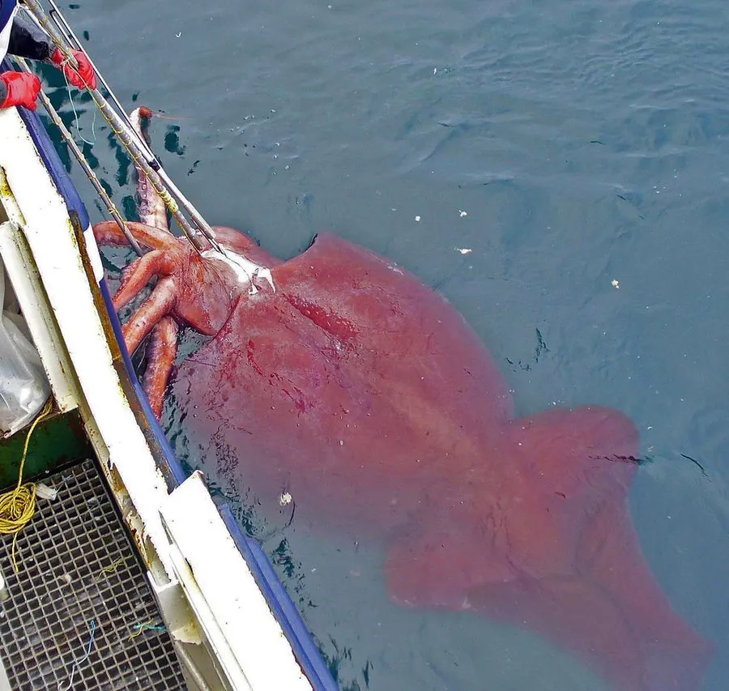

软体动物 · 动物界
大王酸浆鱿 Mesonychoteuthis hamiltoni

南极深海最重的无脊椎动物，触腕上生着可旋转的钩爪，眼睛直径可达二十七厘米，是已知动物中最大的眼睛。
- 分类
- 门软体动物门纲头足纲目枪形目科小头乌贼科属酸浆鱿属
- 栖息环境
- 环南极深海的冷水海域，水深多在五百米至两千米以上
- 地理分布
- 南大洋环南极海域，包括南极半岛、罗斯海和南乔治亚岛附近
- 保护级别
- 数据缺乏；尚无专门保护措施，深海拖网为潜在威胁
物种志
大王酸浆鱿的外套膜呈圆锥形，长约两米，连触腕全长可达十米以上，体重可达四百至五百千克，是已知最重的无脊椎动物。它有十条腕，其中八条为短腕，两条为细长而能伸缩的捕食触腕，触腕内缘排列着可旋转的锋利钩爪，而不是普通乌贼的吸盘，猎物一旦被钩住就很难挣脱。它的眼睛直径可达二十七厘米，是动物界已知最大的眼睛，能在南极深海极暗的环境里捕捉微弱光线。
它分布在环南极海域，栖息水深通常在五百米至两千米以上，幼体多出现在较浅水层，成体则下沉到深海。它主要捕食犬牙鱼等深海鱼类，也是抹香鲸胃中常见的残骸来源；人类对活体的观察记录极少，绝大多数标本来自抹香鲸胃内容物和偶然捕获。它的繁殖与寿命仍不清楚，估计寿命约一至两年。目前它被列为数据缺乏，深海拖网是潜在威胁。
形态与习性
- 食性捕食犬牙鱼等深海鱼类，偶食其他头足类
- 体长外套膜约两米，连触腕全长可达十米以上
- 体重可达四百至五百千克，为最重的无脊椎动物
- 眼睛直径可达二十七厘米，为动物界已知最大
- 栖息深度多在五百米至两千米以上，幼体栖于较浅水层
- 繁殖繁殖习性几乎未知，估计寿命一至两年
趣味知识
- 大王酸浆鱿的触腕上长着可旋转的钩爪，这是它区别于其他大型乌贼的最明显特征。
- 它的眼睛直径可达二十七厘米，比篮球还大，是目前已知动物中最大的眼睛。
- 人类几乎没有见过活体，绝大多数标本是从抹香鲸胃里取出的残骸。